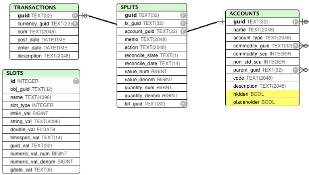

GnuCash SQL Object model and schema
Book
Таблица books. В базе данных может быть только одна книга:
CREATE TABLE books (
guid CHAR(32) PRIMARY KEY NOT NULL,
root_account_guid CHAR(32) NOT NULL,
root_template_guid CHAR(32) NOT NULL
);
Поля:
- root_account (mandatory)
- The account at the root of the tree structure
- root_template (mandatory)
- Use to attach split from template/scheduled transactions
Commodity
CREATE TABLE commodities (
guid CHAR(32) PRIMARY KEY NOT NULL,
namespace text(2048) NOT NULL,
mnemonic text(2048) NOT NULL,
fullname text(2048),
cusip text(2048),
fraction integer NOT NULL,
quote_flag integer NOT NULL,
quote_source text(2048),
quote_tz text(2048)
);
- A Commodity is either a currency (€, $, ...) or a commodity/stock that can be stored in/traded
- through an Account.
The Commodity object is used in two different (but related) contexts.
- each Account should specify the Commodity it handles/stores. For usual accounts (Savings, Expenses, etc), the Commodity is a currency. For trading accounts, the Commodity is usually a stock (AMZN, etc). In this role, each commodity (be it a stock or a currency) can have Prices attached to it that give the value of the commodity expressed in a given currency.
- each Transaction should specify the Currency which is used to balance itself.
Fields
- namespace (mandatory)
- A string representing the group/class of the commodity. All commodities that are currencies should have ‘CURRENCY’ as namespace. Non currency commodities should have other groups.
- mnemonic (mandatory)
- The symbol/stock sticker of the commodity (relevant for online download of quotes)
- fullname
- The full name for the commodity. Besides the fullname, there is a “calculated property” unique_name equal to “namespace::mnemonic”
- cusip
- unique code for the commodity
- fraction
- The smallest unit that can be accounted for (for a currency, this is equivalent to the scu, the smallest currency unit) This is essentially used for a) display and b) roundings
- quote_flag
- True if Prices for the commodity should be retrieved for the given stock. This is used by the “quote download” functionnality.
- quote_source
- The source for online download of quotes
Invariant
a currency commodity has namespace==’CURRENCY’ only currencies referenced by accounts or commodities are stored in the table ‘commodities’ (the complete list of currencies is available within the GnuCash application) a stock commodity has namespace!=’CURRENCY’
Account
CREATE TABLE accounts (
guid CHAR(32) PRIMARY KEY NOT NULL,
name text(2048) NOT NULL,
account_type text(2048) NOT NULL,
commodity_guid CHAR(32) NOT NULL,
commodity_scu integer NOT NULL,
non_std_scu integer NOT NULL,
parent_guid CHAR(32),
code text(2048),
description text(2048)
);
An account tracks some commodity for some business purpose. Changes in the commodity amounts are modelled through Splits (see Transaction & Splits). Fields
- type (mandatory)
- the type of the account as string
- commodity (mandatory)
- The commodity that is handled by the account
- parent (almost mandatory)
- the parent account to which the account is attached. All accounts but the root_account should have a parent account.
- commodity_scu (mandatory)
- The smallest currency/commodity unit is similar to the fraction of a commodity. It is the smallest amount of the commodity that is tracked in the account. If it is different than the fraction of the commodity to which the account is linked, the field non_std_scu is set to 1 (otherwise the latter is set to 0).
- name
- self-explanatory
- description
- self-explanatory
- placeholder
- if True/1, the account cannot be involved in transactions through splits (ie it can only be the parent of other accounts). if False/0, the account can have Splits referring to it (as well as be the parent of other accounts). This field, if True, is also stored as a Slot under the key “placeholder” as a string “true”.
- hidden
- to be investigated
Invariant
if placeholder, no new splits can be created/changed (like a “freeze”) only two accounts can have type ROOT (the root_account and the root_template of the book). the type of an account is constrained by the type of the parent account trading account are used when the option “use trading accounts” is enabled
Transaction & Splits
CREATE TABLE transactions (
guid CHAR(32) PRIMARY KEY NOT NULL,
currency_guid CHAR(32) NOT NULL,
num text(2048) NOT NULL,
post_date timestamp NOT NULL,
enter_date timestamp NOT NULL,
description text(2048)
);
CREATE TABLE splits (
guid CHAR(32) PRIMARY KEY NOT NULL,
tx_guid CHAR(32) NOT NULL,
account_guid CHAR(32) NOT NULL,
memo text(2048) NOT NULL,
action text(2048) NOT NULL,
reconcile_state text(1) NOT NULL,
reconcile_date timestamp NOT NULL,
value_num integer NOT NULL,
value_denom integer NOT NULL,
quantity_num integer NOT NULL,
quantity_denom integer NOT NULL,
lot_guid CHAR(32)
);
The transaction represents movement of money between accounts expressed in a given currency (the currency of the transaction). The transaction is modelled through a set of Splits (2 or more). Each Split is linked to an Account and gives the increase/decrease in units of the account commodity (quantity) related to the transaction as well as the equivalent amount in currency (value). For a given transaction, the sum of the split expressed in the currency (value) should be balanced. Fields for Transaction
- currency (mandatory)
- The currency of the transaction
- num (optional)
- A transaction number (only used for information ?)
- post_date (mandatory)
- self-explanatory. This field is also stored as a slot under the date-posted key (as a date instead of a time)
- enter_date (mandatory)
- self-explanatory
- description (mandatory)
- self-explanatory
Fields for Split
- tx (mandatory)
- the transaction of the split
- account (mandatory)
- the account to which the split refers to
- value (mandatory)
- the value of the split expressed in the currency of the transaction
- quantity (mandatory)
- the change in quantity of the account expressed in the commodity of the account
- reconcile information
- to be filled
- lot
- reference to the lot (to be investigated)
Invariant
the sum of the value on all splits in a transaction should = 0 (transaction is balanced). If it is not the case, the GnuCash application create automatically an extra Split entry towards the Account Imbalance-XXX (with XXX the currency of the transaction) the value and quantity fields are expressed as numerator / denominator. The denominator of the value should be the same as the fraction of the currency. The denominator of the quantity should be the same as the commodity_scu of the account. the currency of a transaction is the currency of the account into which it is created in the GUI if “use trading accounts” is enabled then the sum of quantities per commodity should also be balanced. This is done thanks to the automatic creation of splits with trading accounts (of type TRADING)
Price
CREATE TABLE prices (
guid CHAR(32) PRIMARY KEY NOT NULL,
commodity_guid CHAR(32) NOT NULL,
currency_guid CHAR(32) NOT NULL,
date timestamp NOT NULL,
source text(2048),
type text(2048),
value_num integer NOT NULL,
value_denom integer NOT NULL
);
The Price represent the value of a commodity in a given currency at some time.
It is used for exchange rates and stock valuation. Fields
- commodity (mandatory)
- the commodity related to the Price
- currency (mandatory)
- The currency of the Price
- datetime (mandatory)
- self-explanatory (expressed in UTC)
- value (mandatory)
- the value in currency of the commodity
Invariant
the value is expressed as numerator / denominator. The denominator of the value should be the same as the fraction of the currency.
Схема основных четырех таблиц
Большая схема